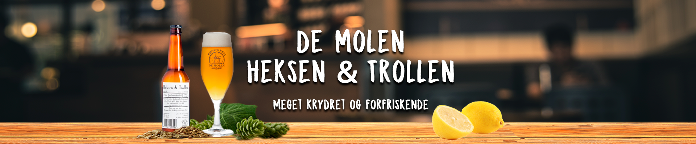
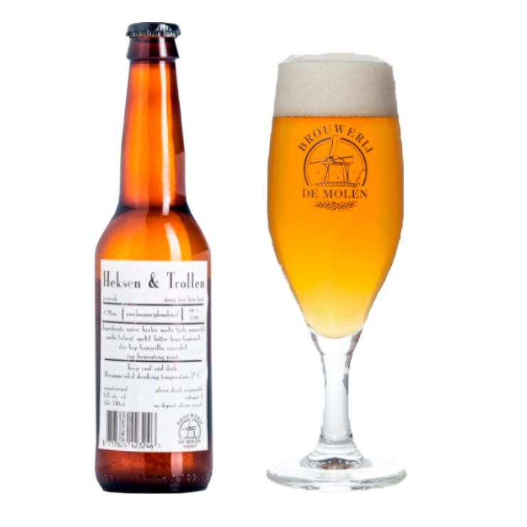
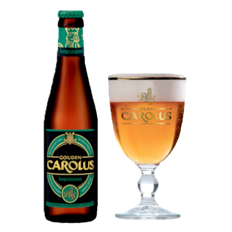

De Molen
Heksen & Trollen
Citrus i smagen, dog med en bitter finish

Untappd:


Ratebeer:


Smag
Heksen & Trollen er gæret ved høj temperatur for at gøre den meget krydret og forfriskende. Der er masser af citrus i smagen, dog med en bitter finish.
Fylde
Let
Kraftig
Livlighed
Rolig
Livlig
Bitterhed
Lidt
Meget
Serveringsforslag
 |
 |
|
| Kylling | Krydet mad | Ost |
Heksen & Trollen bør nydes sammen med en marineret kylling, stærke retter som f.eks. asiatisk mad eller en god rød bøf. Den smager også rigtig godt sammen med en lækker cremet ost.
| Type: | Belgisk saison |
| Alkohol pct.: | 6,1% |
| IBU: | 25 |
| Oprindelse: | Bodegraven, Holland |
| Bryggeri: | Brouwerij De Molen |
| Ingredienser: | Vand, bygmalt, byg, bitter humle |
Øllets historie
Heksen & Trollen er en Saison, hvilket er en gammel belgisk og nordfransk øl-stil. Den er formelt kendt som “white witch”.
Vi har fundet andre øl, du måske vil synes om...

Het Anker
Het Anker
Gouden Carolus Hopsinjoor
Humle stærk blond ale, med en blid smag og en let bitter finish.

Het Anker
Carolus Classic
En dyb, sød og maltet smag.

Fredericia Brewpub
Sanddal Porter
En mild og rund baltisk porter.